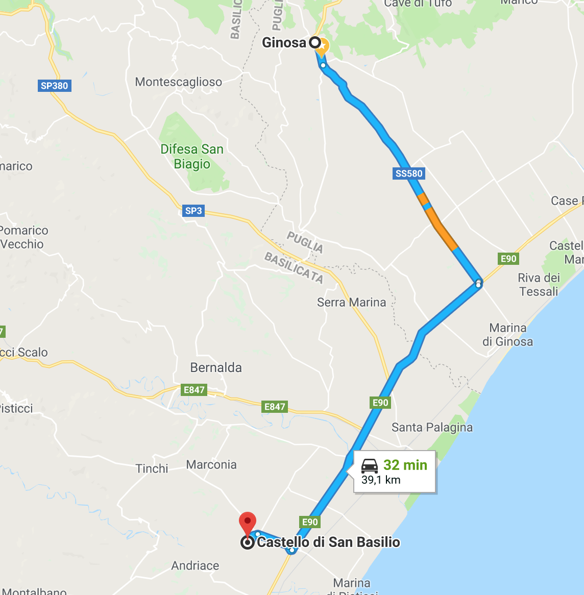
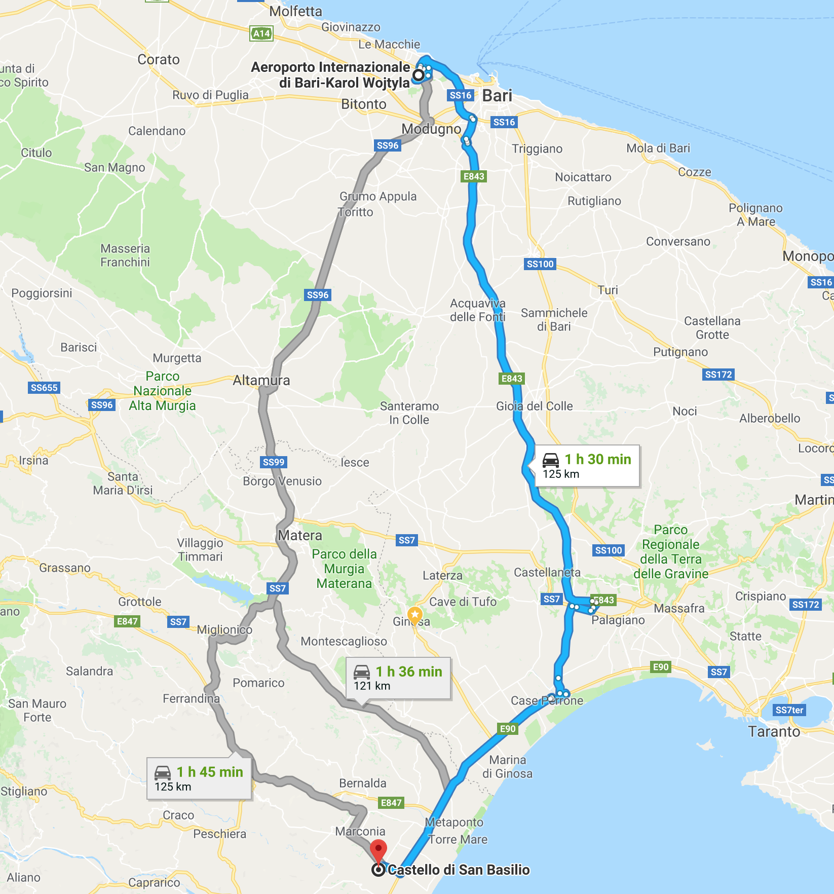

Il Castello di San Basilio
Info su luogo, come raggiungerlo e dove alloggiare
Il maestoso Castello di San Basilio si erge a pochi chilometri dal centro urbano di Marconia, e precisamente sulla strada provinciale che collega Marconia a Marina di Pisticci, in direzione della famosissima Strada Statale 106 Jonica che collega la Calabria alla Basilicata e alla Puglia.

Per parenti ed amici che arrivano da Ginosa, il percorso più comodo è attraverso la SS580 fino all’incrocio per Reggio Calabria e procedere sulla SS106 per alcuni km fino all’uscita Marconia (Pisticci/Marconia/San Basilio). Da lì troverete delle indicazioni e in pochi minuti sarete arrivati. Tempo totale del viaggio circa 30 minuti.
In alternativa si può prendere la strada provinciale 2 che incrocia la SPexSS175, che vi porta dritti sulla SS106.

Per chi arriva da lontano, consigliamo di prendere un volo per Bari. Di lì ci sono diverse opzioni. Per chi desidera essere indipendente e trascorrere alcuni giorni in giro per la Puglia, può prendere un’auto a noleggio. In alternativa ci sono diversi bus o treni da Bari per Ginosa, Castellaneta. Matera. In ogni caso, noi ed i nostri familiari saremmo disposti ad accogliervi all’aeroporto oppure ad organizzare una navetta che vi porti dritti al Castello.
A breve posteremo di seguito qualche link utile.
Luoghi Consigliati per alloggiare
Per quanto riguarda gli alloggi, potreste sceglierne uno nei pressi del Castello o se preferite fare qualche kilometro in più, potreste pernottare in una struttura vicino la spiaggia.
Il Sigillo
Link Google Maps: https://goo.gl/maps/UNpefuosYby
Indirizzo: C.da Tratturo del Re, 75015 Pisticci MT
Agrumare
Sito Internet: http://agrumare.it/
Indirizzo: Strada Provinciale Pozzitello San Basilio, Contrada Cesine - Via Telemaco snc - Frazione Marconia, 75015 Pisticci MT
Casapanetta
Sito Internet: http://www.casapanetta.com/
Indirizzo: Contrada S. Basilio, 75020 Marconia, Pisticci MT
Il Filaro del Castello San Basilio
Sito Internet: https://www.ilfilaro.com/
Indirizzo: Contrada S. Basilio, 75020 Marconia, Pisticci MT